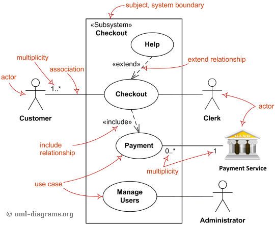
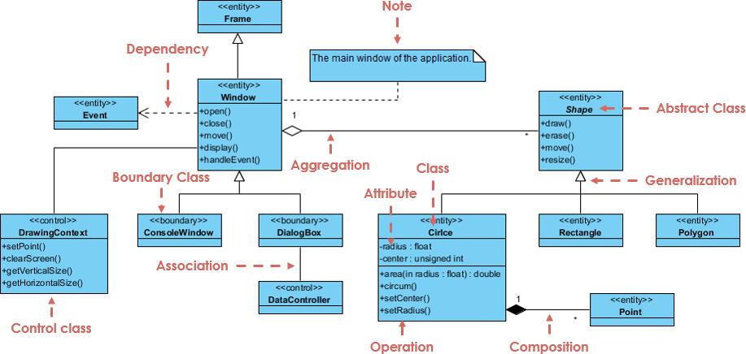
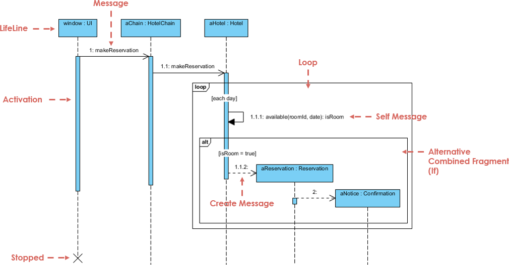
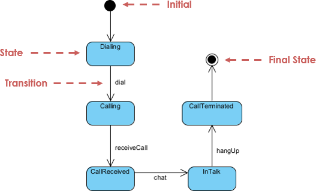
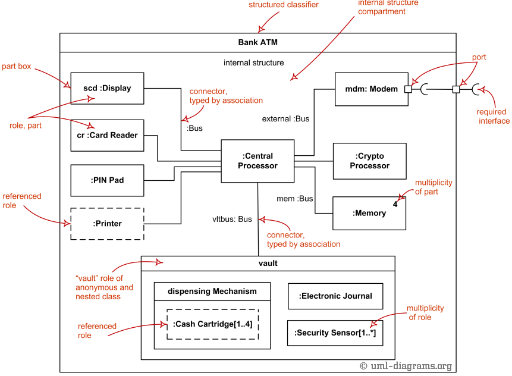

UML
Mis see on?
UML(Unified Modeling Language, ühtne mudelikeel) on harustandardiks
kujunenud
keel tarkvarasüsteemides kasutatavate artefaktide
spetsifitseerimiseks, visualiseerimiseks, väljatöötamiseks ja
dokumenteerimiseks.
UML pakub valmistusele kindla tugistruktuuri, hõlbustades
tarkvaraarenduse keerukat protsessi. UML-i töötasid välja firma
Rational Software juhtivad süsteemispetsialistid Grady Booch, Ivar
Jacobson ja Jim Rumbaugh.
Use Case Diagram
Lühikirjeldus
Use Case diagram kirjeldab süsteemi funktsionaalsust kasutaja
vaatenurgast. See näitab,
mida kasutaja saab süsteemiga teha, mitte kuidas süsteem
töötab.
Kujundid ja elemendid
- Ovaal - Funktsioon või tegevus
- Joon - Seos kasutaja ja funktsiooni vahel
- Include - Kohustuslik tegevus
- Extend - Valikuline tegevus
Näidis

Class Diagram
Lühikirjeldus
Class diagram kirjeldab süsteemi struktuuri objektorienteeritud vaated.
See näitab klasse, nende omadusi ja meetodeid ning nende vahelised seosed.
Kujundid ja elemendid
- Ristkülik - Klass. On jagatud kolmeks osaks: Klassi nimi, atribuudid ja meetodid.
- Tavaline joon - Seos klasside vahel.
- Tühi romb joone otsas (Agregatsioon) - Tähendab, et osad kuuluvad tervikule, aga saavad eksisteerida ka eraldi.
- Täidetud romb joone otsas (Composition) - Tähendab, et osad kuuluvad tervikule ja ei saa eksisteerida eraldi.
- Kolmnurkne tühi nool (Generalization) - Pärilus.
- Katkendjoon noolega (Dependency) - Tähendab, et üks klass kasutab teist.
Näidis

Sequence Diagram
Lühikirjeldus
Sequence diagram näitab, kuidas objektid suhtlevad ajas. See keskendub sõnumite järjekorrale.
Kujundid ja elemendid
- Lifeline - Vertikaalne joon, mis näitab objekti olemasolu ajas. Näitab, millal objekt töötab
- Activation - Vertikaalne ristkülik lifeline peal.
- Täisjoon noolega - Tavaline sõnum, näitab meetodi väljakutset.
- Raam - Loop(Kordus), alt(if/else),
Näidis

State Diagram
Lühikirjeldus
State diagram kirjeldab objekti olekuid ja nende muutumist ajas.
Seda kasutatakse süsteemide käitumise modelleerimiseks.
Kujundid ja elemendid
- Ristkülik - Objekti seisund
- Nooled - Üleminek ühest olekust teise
- Täidetud ring - Objekti algolek
- Topeliring - Objekti lõppolek
Näidis

Composite Structure Diagram
Lühikirjeldus
Composite Structure Diagram kirjeldab, kuidas üks klass või komponent on sisemiselt üles ehitatud..
See näitab objekti või süsteemi osa sisemisi elemente ja nendevahelisi ühendusi.
Kijundid ja elemendid
- Classifier - Klass, mille sisse vaadatakse
- Ristkülikud - Sisemised klassid, millest süsteem koosneb
- Ruudud classifier serval - Pordid, nad näitavad kust kaudu komponent suhtleb välismaailmaga
- Jooned osade või portide vahel - Ühendused, näitavad kuidas objektid omavahel suhtlevad
- Rollid - näitavad, millist rolli mingi osa täidab süsteemis
Näide

Spetsiifilised UML diagrammid